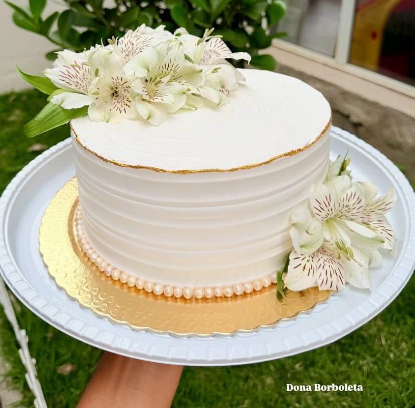
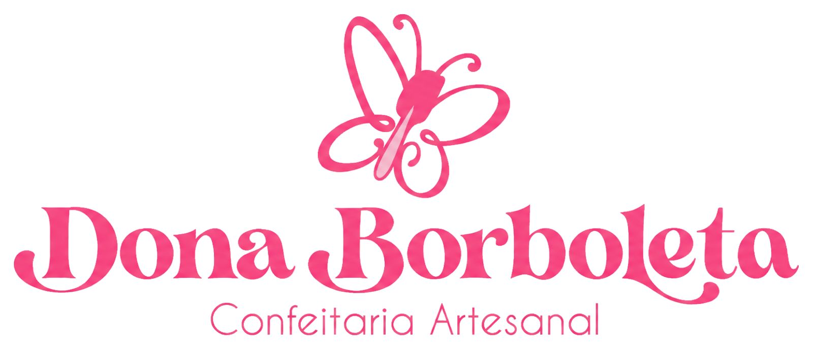
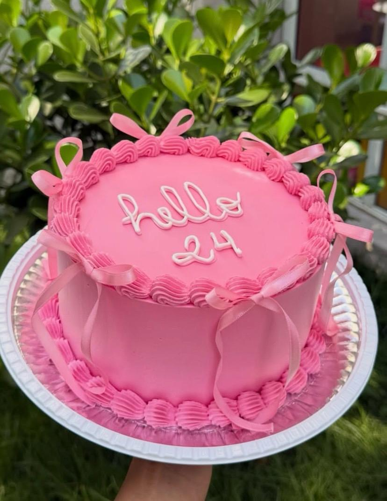
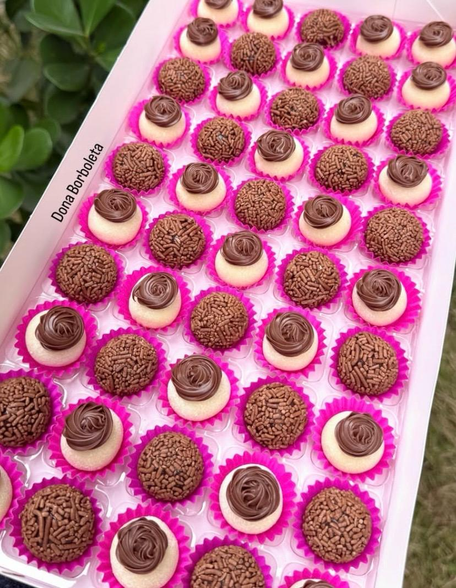
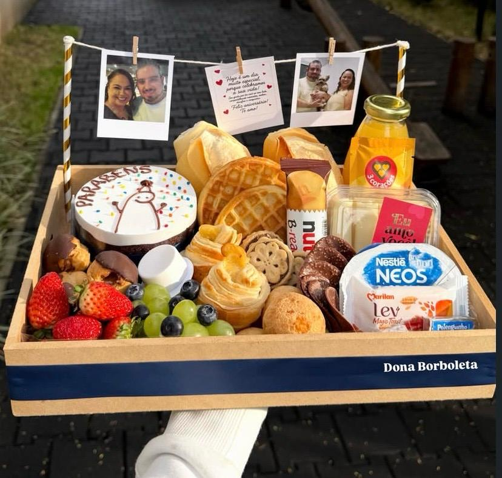
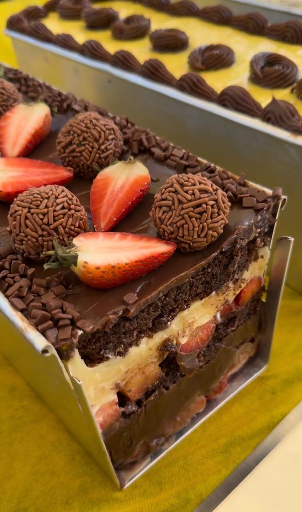
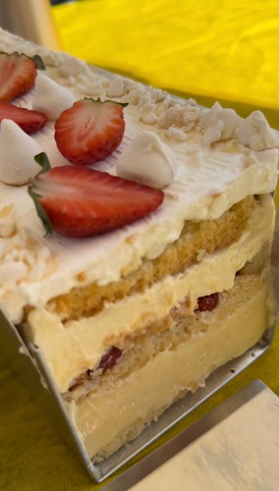
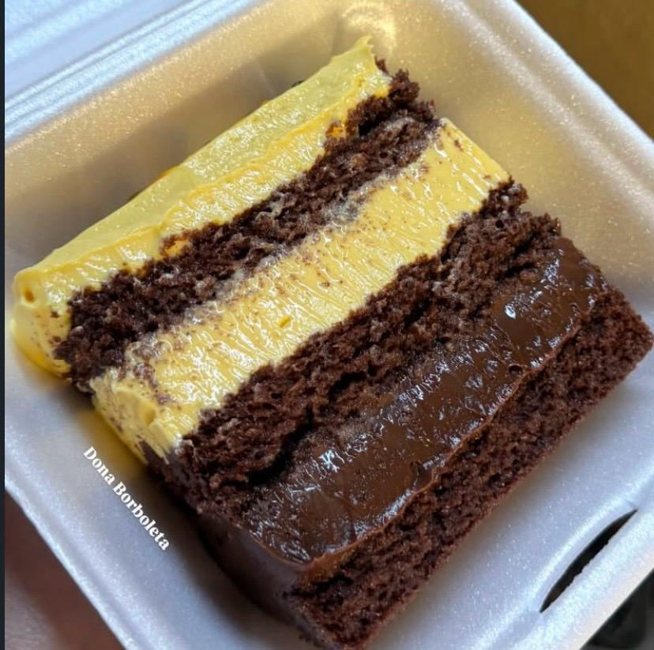
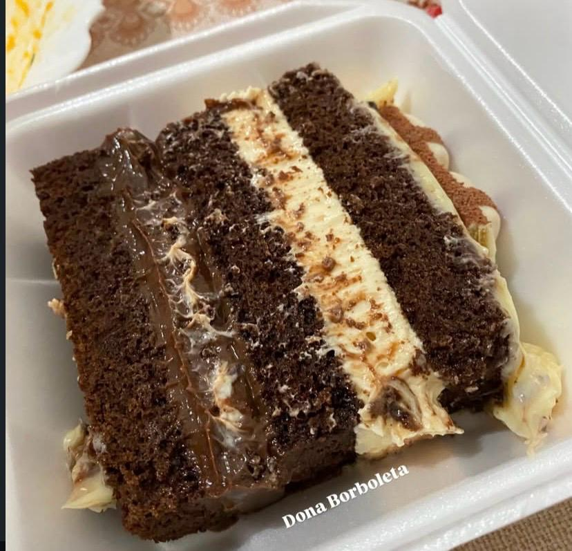
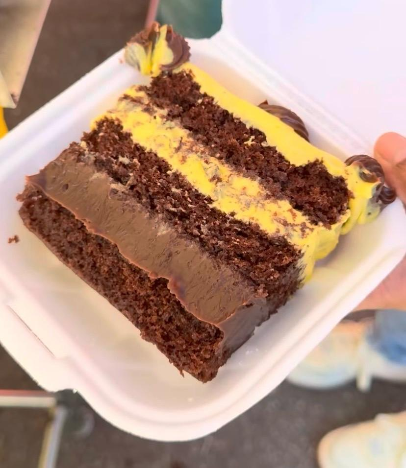

01
Bolos de festa
Decorações pensadas para combinar com cada comemoração.

Doces feitos para ficar na memória
Bolos, docinhos e cestas preparados à mão para transformar encontros simples em lembranças deliciosas.

Uma cozinha pequena, um carinho enorme
À frente da Confeitaria Dona Borboleta está Íris Valéria, confeiteira responsável por transformar ingredientes simples em bolos, docinhos e presentes preparados com cuidado.
Escolha uma receita
Opções para aniversários, encontros, presentes e pequenas comemorações.

Decorações pensadas para combinar com cada comemoração.

Brigadeiros, beijinhos e combinações para dividir ou presentear.

Um jeito especial de mandar carinho para alguém.
Produto em destaque
Uma seleção de sabores feitos para experimentar aos poucos, escolher o seu favorito e voltar para provar outro.
Pedir pelo WhatsApp

Feito à mão



Vamos conversar?